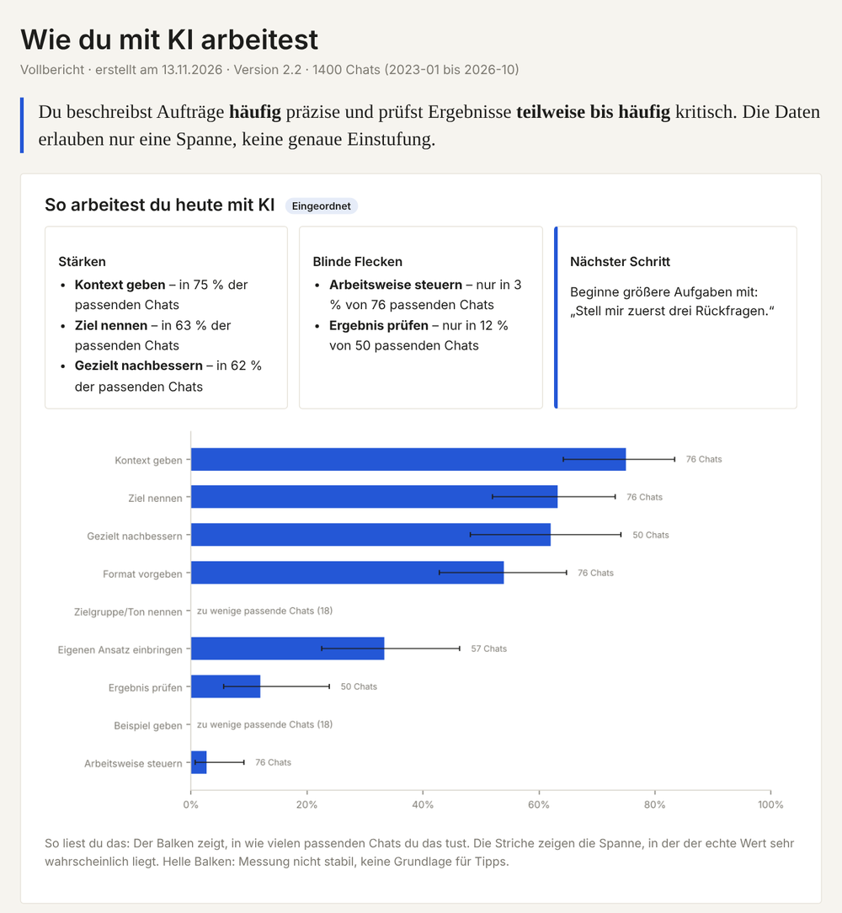
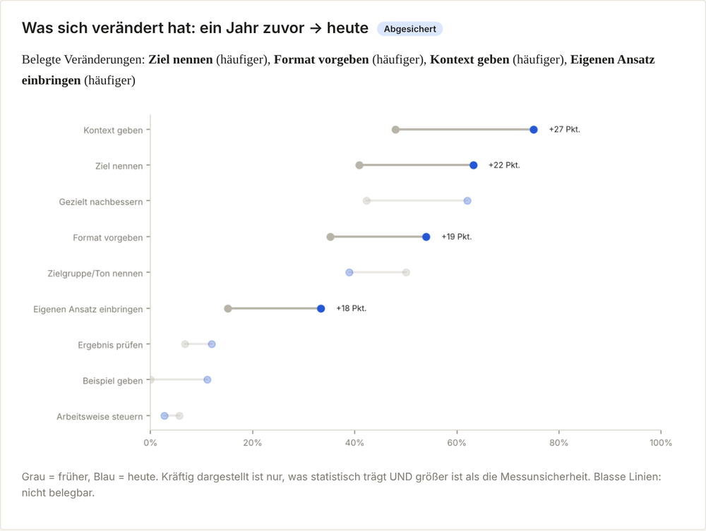
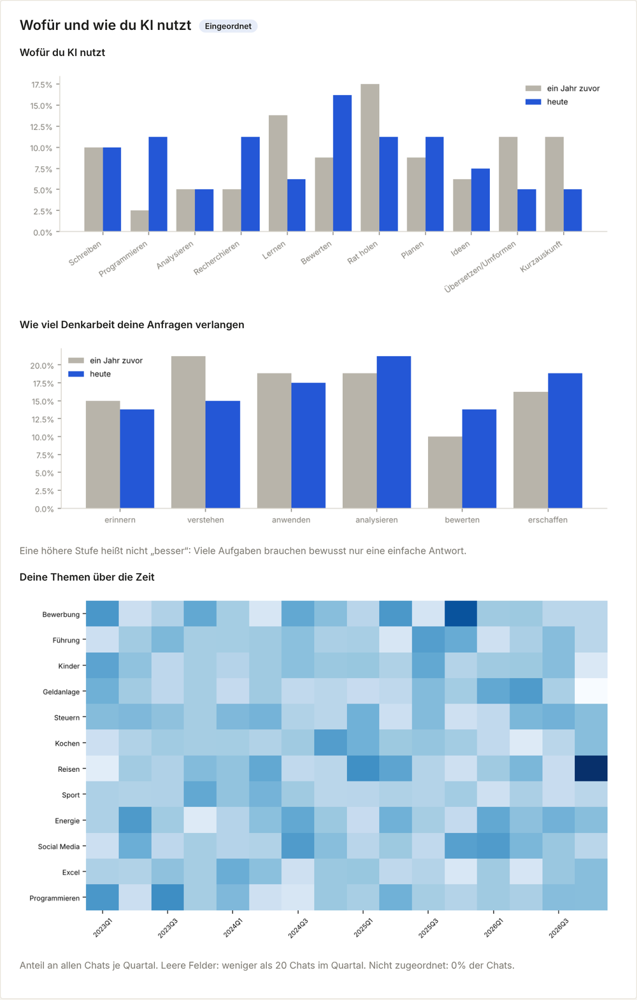
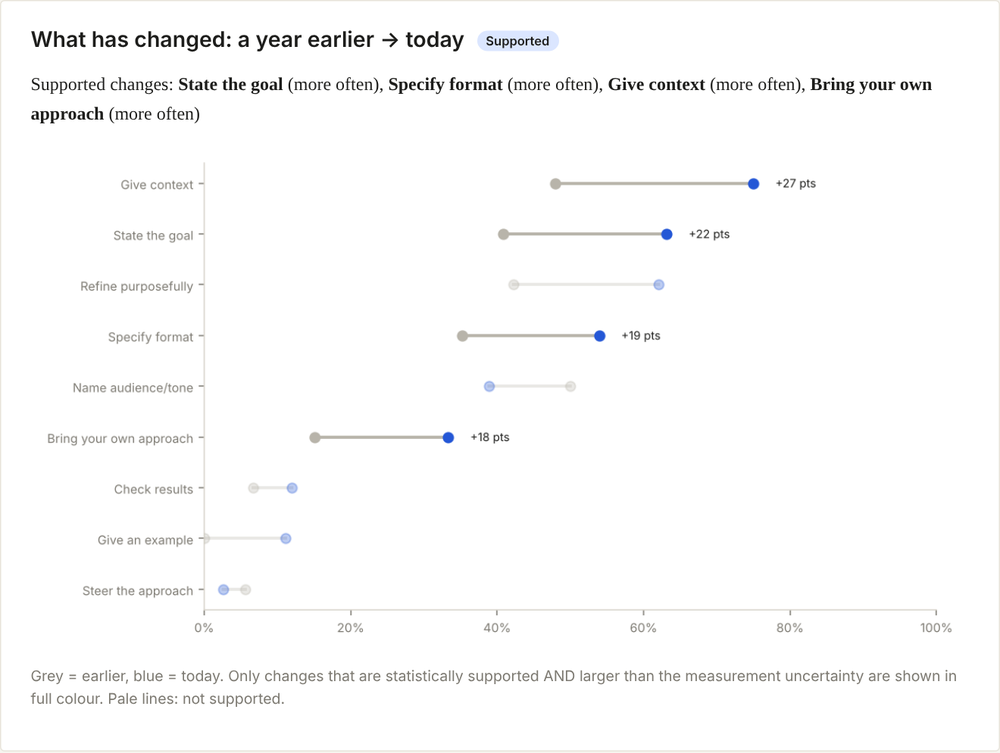
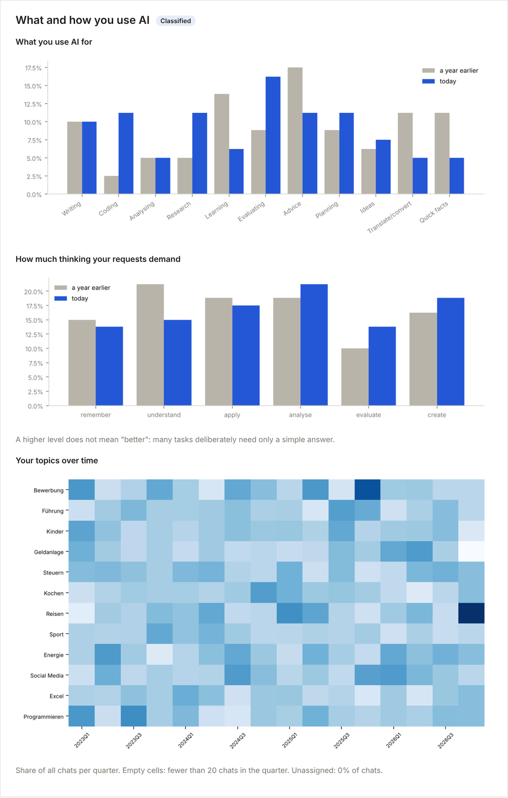

Eine Datei, in ChatGPT gezogen, macht aus deinem eigenen Chatverlauf einen persönlichen Bericht: wofür du KI nutzt, wie gut du sie anleitest, ob du Antworten prüfst – und was sich verändert hat.
⏱ Plane zwei Etappen ein: Zuerst forderst du bei OpenAI eine Kopie deiner Chats an. Die kommt per E-Mail, meist nach Minuten bis Stunden, selten erst nach einigen Tagen. Wenn sie da ist, machst du den Rest in etwa 30 Minuten.
Das machst du einmal am Anfang. Danach heißt es warten.
Im Browser auf chatgpt.com, angemeldet mit dem Konto, dessen Chats du auswerten möchtest.
Klicke unten links auf deinen Namen bzw. dein Profilbild und dann der Reihe nach auf:
Einstellungen → Datenkontrollen → bei „Daten exportieren“ auf Exportieren → Export bestätigen
Englische Oberfläche: Settings → Data controls → Export data → Export → Confirm export.
Kein Menüpunkt „Daten exportieren“? Dann über privacy.openai.com → „Make a Privacy Request“ → „I have a consumer ChatGPT account“ → „Download my data“.
Firmenkonto (ChatGPT Business/Enterprise)? Dort gibt es keinen eigenen Export – nur deine IT-Abteilung kann helfen.
OpenAI schickt dir eine E-Mail mit einem Download-Link. Schau auch im Spam-Ordner nach.
⚠️ Der Link gilt nur 24 Stunden. Lade die Datei also bald herunter und sei dabei im selben Konto angemeldet. Ist der Link abgelaufen, forderst du den Export einfach neu an.
Du bekommst eine ZIP-Datei. Mac: Doppelklick. Windows: Rechtsklick → „Alle extrahieren“.
Im entpackten Ordner liegen viele Dateien. Du brauchst nur die, deren Name mit „conversations“ beginnt. Alles andere ignorierst du.
Bei manchen heißt es nur eine Datei conversations.json, bei anderen sind es 30 oder mehr. Zähle, wie viele es sind – ChatGPT fragt dich gleich danach.
Sobald du die conversations-Dateien vor dir hast. Etwa 30 Minuten, davon wartest du die meiste Zeit.
⬇ Auswertungsdatei herunterladen
Eine normale Textdatei für ChatGPT (Endung .py). Du musst sie nicht öffnen und nichts installieren.
Im selben Konto, aus dem dein Export stammt.
Erstelle meinen KI-Bericht mit der angehängten Datei.Dann abschicken. Noch keine conversations-Dateien mitschicken!
Schreib einfach die Zahl, z. B. 23.
ChatGPT nimmt höchstens 10 Dateien pro Nachricht an. Markiere 10 Dateien, zieh sie in den Chat und schick ab. ChatGPT sagt dir nach jedem Paket, wie viele noch fehlen.
Mehrere Dateien markieren: Cmd-Taste (Mac) bzw. Strg-Taste (Windows) gedrückt halten und anklicken.
ChatGPT wertet aus (15–25 Minuten) und gibt dir am Ende einen Link zu deinem Bericht. Klicke darauf und öffne die Datei mit Doppelklick – sie öffnet sich in deinem Browser.



One file, dropped into ChatGPT, turns your own chat history into a personal report: what you use AI for, how well you brief it, whether you check its answers – and what has changed.
⏱ Plan for two stages: first you request a copy of your chats from OpenAI. It arrives by email, usually within minutes to hours, occasionally after a few days. Once it's there, the rest takes about 30 minutes.
You do this once at the start. Then you wait.
In your browser at chatgpt.com, signed in to the account whose chats you want to analyse.
Click your name or profile picture at the bottom left, then:
Settings → Data controls → next to "Export data" click Export → Confirm export
No "Export data" option? Use privacy.openai.com → "Make a Privacy Request" → "I have a consumer ChatGPT account" → "Download my data".
Company account (ChatGPT Business/Enterprise)? There is no self-service export – only your IT department can help.
OpenAI emails you a download link. Check your spam folder too.
⚠️ The link is only valid for 24 hours. Download soon, signed in to the same account. If it has expired, simply request the export again.
You get a ZIP file. Mac: double-click. Windows: right-click → "Extract all".
The folder contains many files. You only need the ones whose names start with "conversations". Ignore everything else.
Some people have a single conversations.json, others 30 or more. Count how many there are – ChatGPT will ask you.
As soon as you have the conversations files. About 30 minutes, mostly waiting.
A plain text file for ChatGPT (.py). You don't need to open it or install anything.
In the same account your export came from.
Create my AI usage report with the attached file.Then send. Don't attach the conversations files yet!
Just type the number, e.g. 23.
ChatGPT accepts at most 10 files per message. Select 10 files, drag them into the chat and send. After each batch ChatGPT tells you how many are left.
To select several files, hold Cmd (Mac) or Ctrl (Windows) and click each one.
ChatGPT analyses (15–25 minutes) and finally gives you a link to your report. Click it and double-click the file – it opens in your browser.

